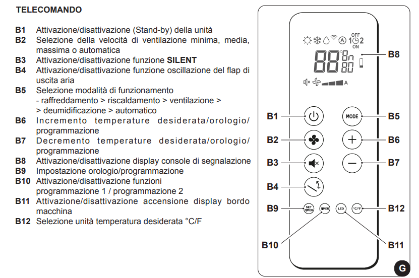
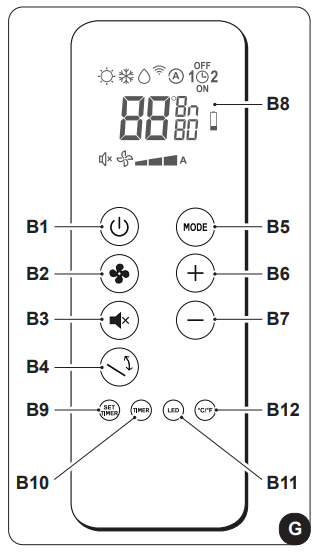

Istruzioni condizionatore
Uso del telecomando
- Maneggiare con cura, evitare di bagnarlo o farlo cadere.
- Non esporre alla luce diretta del sole.
- Rimuovere le batterie in caso di inutilizzo prolungato.
- Tenere il telecomando in una posizione dalla quale il segnale può raggiungere il ricevitore dell'apparecchio (massimo 8 metri).
Descrizione del telecomando (Camera)


Descrizione del telecomando (Salotto)
-



Descrizione del display telecomando


Funzioni del condizionatore
- Accensione/Spegnimento: premere il pulsante B1
 per attivare o disattivare il condizionatore.
per attivare o disattivare il condizionatore.
- Controllo della velocità del ventilatore: premere il tasto B2
 per cambiare la velocità: Bassa > Media > Alta > Automatica.
per cambiare la velocità: Bassa > Media > Alta > Automatica.
- Modalità automatico: regola automaticamente la temperatura e la velocità della ventola.
Premere il tasto B5
 fino a visualizzare il simbolo D5
fino a visualizzare il simbolo D5  .
.
- Modalità deumidificazione: deumidifica l'ambiente. premere il tasto B5
fino a visualizzare il simbolo D3
 e la ventilazione minima D18 .
e la ventilazione minima D18 .
- Modalità ventilazione: non agisce su temperatura o umidità.
Premere il tasto B5
fino a visualizzare il simbolo della ventilazione minima D18 .
- Modalità riscaldamento: riscalda l'ambiente. premere il tasto B5
fino a visualizzare il simbolo D1
 .
.
- Controllo del flusso d'aria: premere il tasto B4
 per attivare/disattivare l’oscillazione continua del deflettore mobile.
per attivare/disattivare l’oscillazione continua del deflettore mobile.
- Funzione SILENT: riduce gradualmente la velocità del ventilatore.
Premere il tasto B3
 per attivare la funzione SILENT.
per attivare la funzione SILENT.
Consigli per il risparmio energetico
- Chiudere porte e finestre durante l'uso.
- Non ostruire le vie di flusso dell'aria.
Diagnosi e allarmi
- LED A: pulizia del filtro necessaria.
- LED B: alta temperatura batteria.
- LED A + C lampeggianti: funzionamento continuo pompa.

Avvertenze generali
- Non muovere manualmente il flap di uscita aria.
- In caso di perdite d'acqua, spegnere immediatamente e scollegare l'apparecchio.
Se riscontri problemi, contatta l'host, Alessandro.